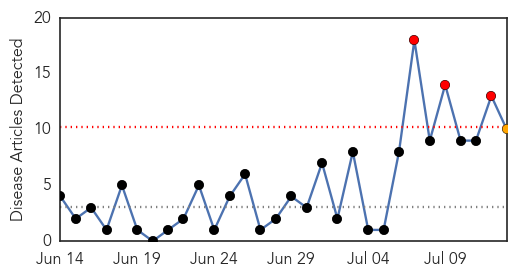
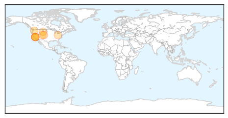
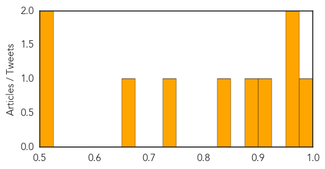

Hemmorhagic Fever
30-Day Web Trend
0 alerts, 0 warnings

30-Day Twitter Trend
0 alerts, 0 warnings

Article Locations

Article Confidences

Top Articles:
-
No articles found for Jul 13, 2015
Top Tweets:
-
No tweets found for Jul 13, 2015
West Nile Virus
30-Day Web Trend
3 alerts, 1 warnings

30-Day Twitter Trend
4 alerts, 0 warnings

Article Locations
Article Confidences
Top Articles:
- 0.996
- NY health officials warn of mosquito risk
- 0.957
- West Nile virus spreads: Is California drought to blame?
- 0.956
- California drought responsible for spreading of West Nile virus
- 0.903
- Amid rainy summer, Ohio urges precautions against mosquitoes
- 0.884
- West Nile Virus threat looms over DeKalb County
- 0.825
- Season’s first West Nile virus case confirmed in Wyoming
- 0.741
- Monsoons could bring more mosquitoes
- 0.666
- Man Paralyzed By West Nile Virus Wants Cities To Be Proactive « CBS Denver
- 0.524
- Weld County health officials: West Nile virus found in mosquitoes
- 0.500
- 5 Signs the Historic Drought Is Getting Much Worse
Top Tweets:
-
No tweets found for Jul 13, 2015